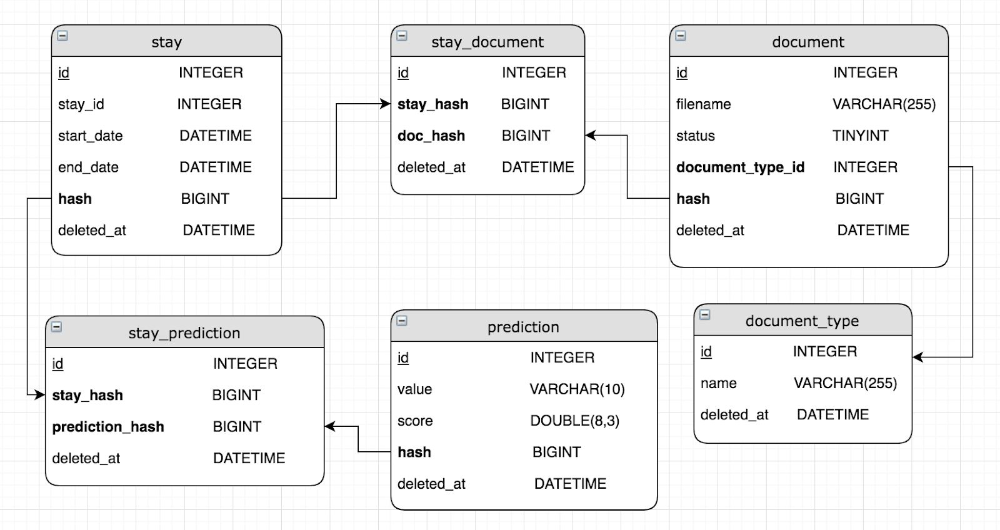
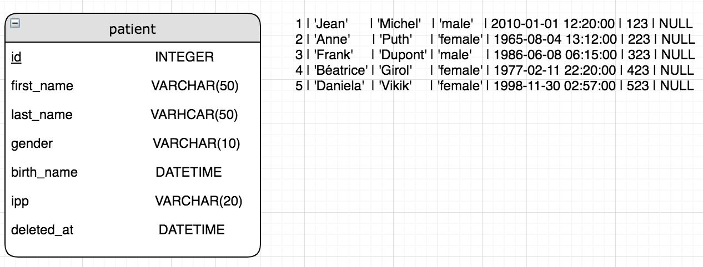
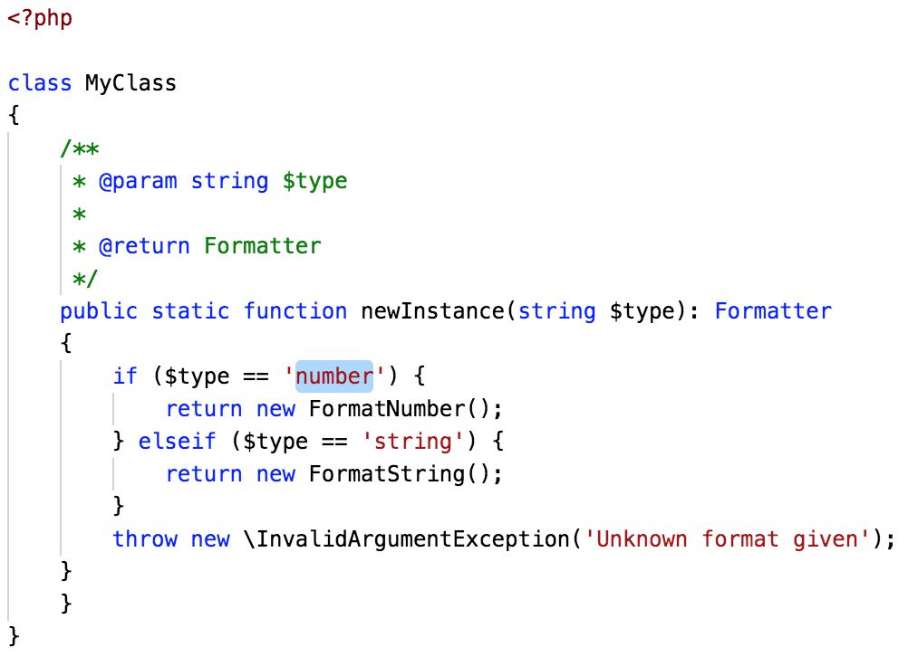
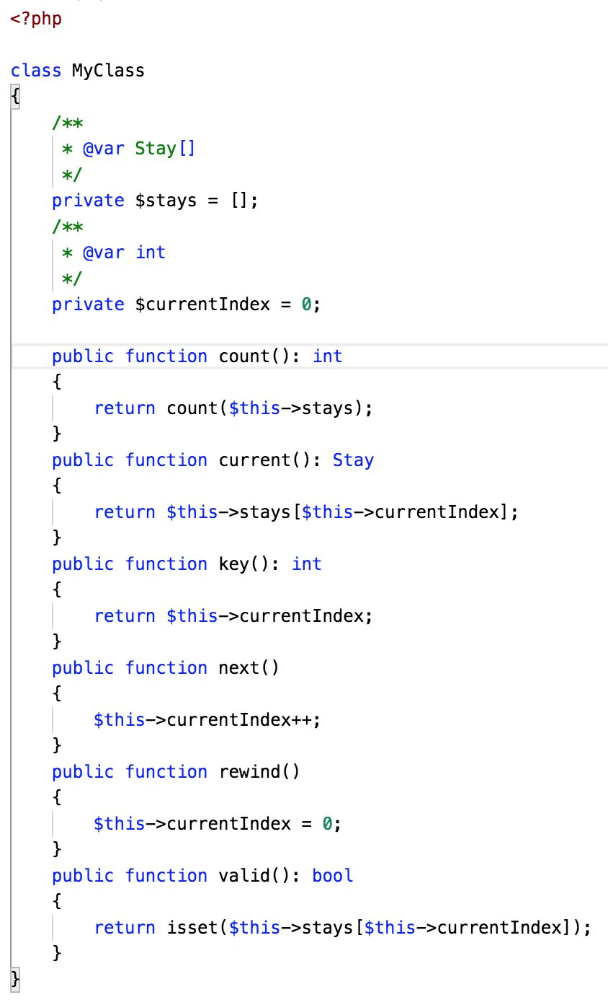

SQL
1. Requêtages SQL
a/ Ecrivez la requête qui permet de récupérer les séjours qui ont des prédictions ordonnées par leur score décroissant et dont les dates de softDelete (deleted_at) sont NULL.
b/ Ecrivez la requête qui permet de compter le nombre de documents par type de documents (même ceux qui n’en ont pas) et dont les dates de softDelete (deleted_at) sont NULL.
c/ Ecrivez la requête qui permet de récupérer un séjour qui a une prédiction et dont la date de sortie (end_date) est comprise entre le début et la fin de cette année et dont les dates de softDelete (deleted_at) sont NULL, limiter le nombre de résultat à 50.
d/ Ecrivez la requête qui permet de récupérer les identifiants de séjour (stay_id) qui ont au moins 2 documents et dont les dates de softDelete (deleted_at) sont NULL.
e/ Ecrivez la requête qui permet de récupérer le nombre de documents moyen par séjour.
f/ Ecrivez la requête qui permet de récupérer les identifiants de séjour (stay_id) et les dates de séjour (start_date, end_date) qui ont un identifiant de séjour qui commence par 192 OU qui qui ont une date de sortie avant la fin de cette année et dont les dates de softDelete (deleted_at) sont NULL.
2. Architecture SQL

SELECT first_name,last_name,gender,ipp FROM patient WHERE gender = ‘male’;
Considérant le schéma et la requête ci-dessus, quelles optimisations sont possibles pour améliorer la rapidité de la requête.
3. Ecrivez une liste d'optimisations SQL
PHP
1. Taille d'un tableau
Quelle est la taille du tableau ci-dessous ?
$arr = [];
$arr[8] = 'test';
Réponse : 1 / 8 / 9
2. Instance de classe
Combien de classe ont été instanciées ?
class A { }
$a = new A();
$b = new B();
$c = $b;
Réponse : 1 / 2 / 3
3. Design Pattern
Quel design pattern sont représentés ci-dessous ?
 4. Exercices
Réalisez 3 exercices parmi les choix possibles
Bob medium
Flatten Array easy
Luhn medium
Scrabble score easy
Run Length Encoding medium
Matching brackets easy
Hamming easy
Armstrong Numbers easy
Pig latin medium
Beer song easy